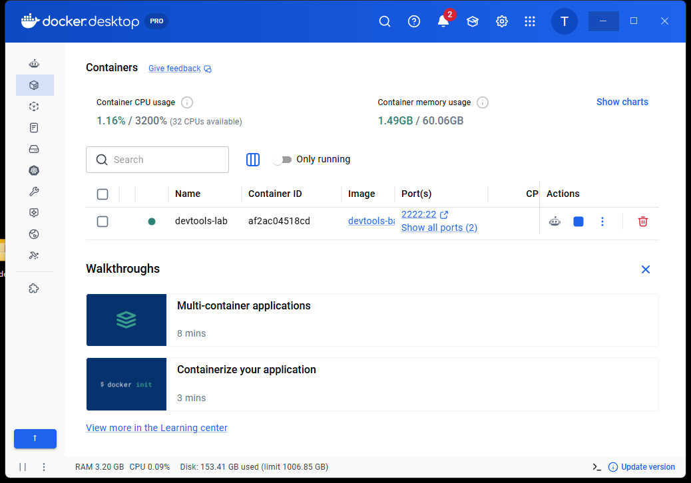
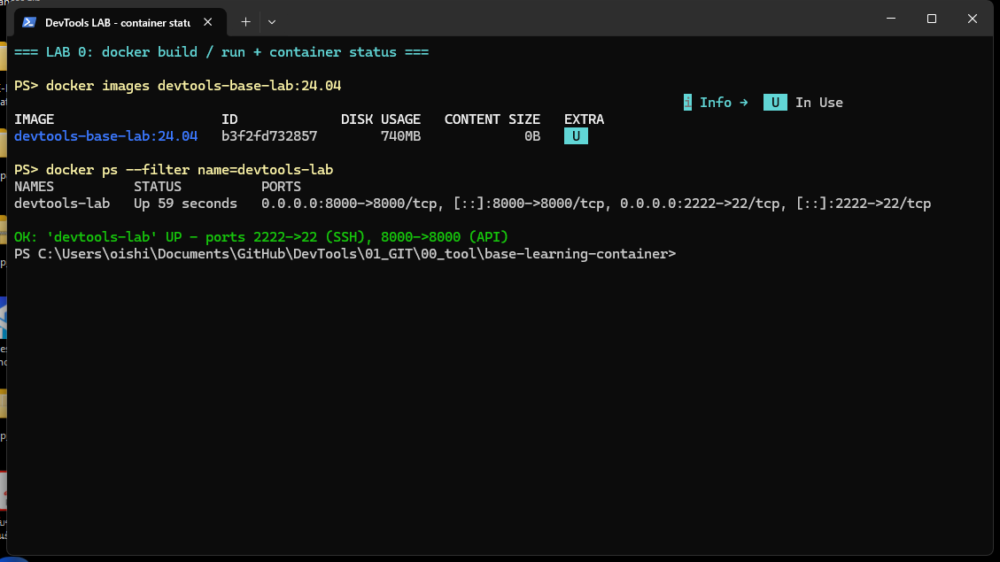
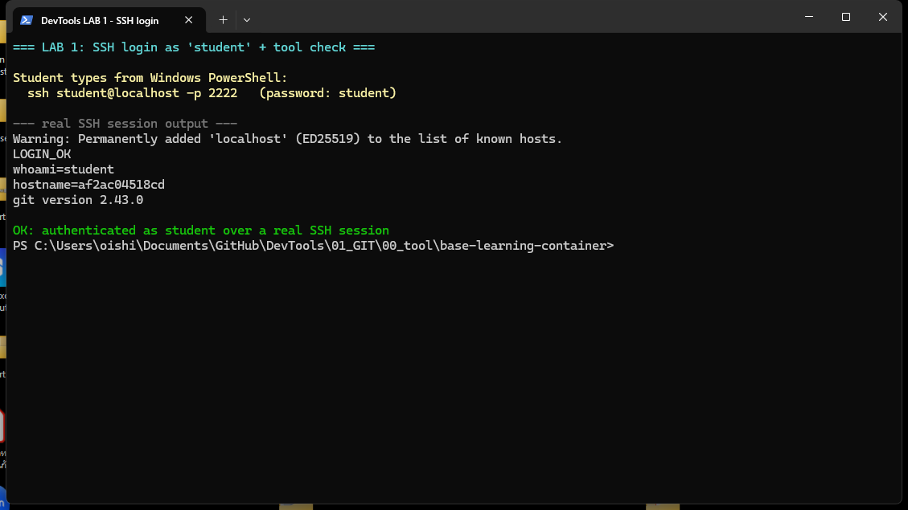
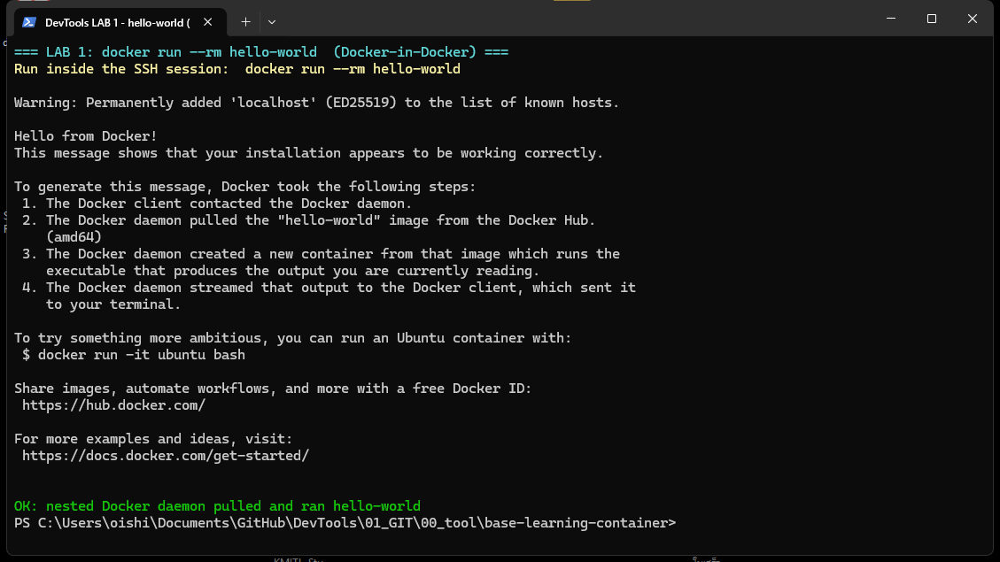
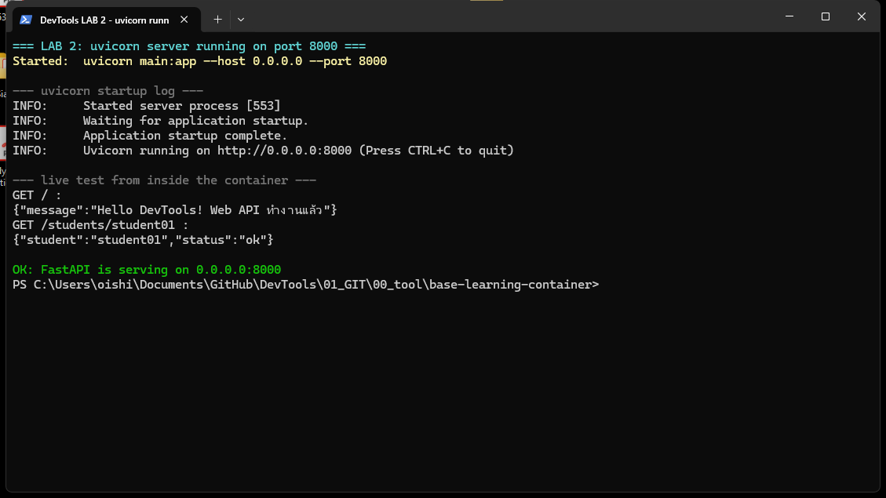
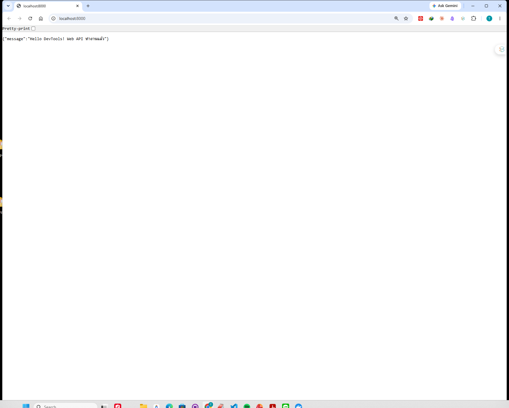
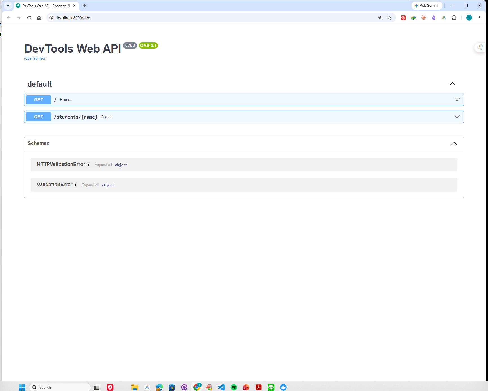
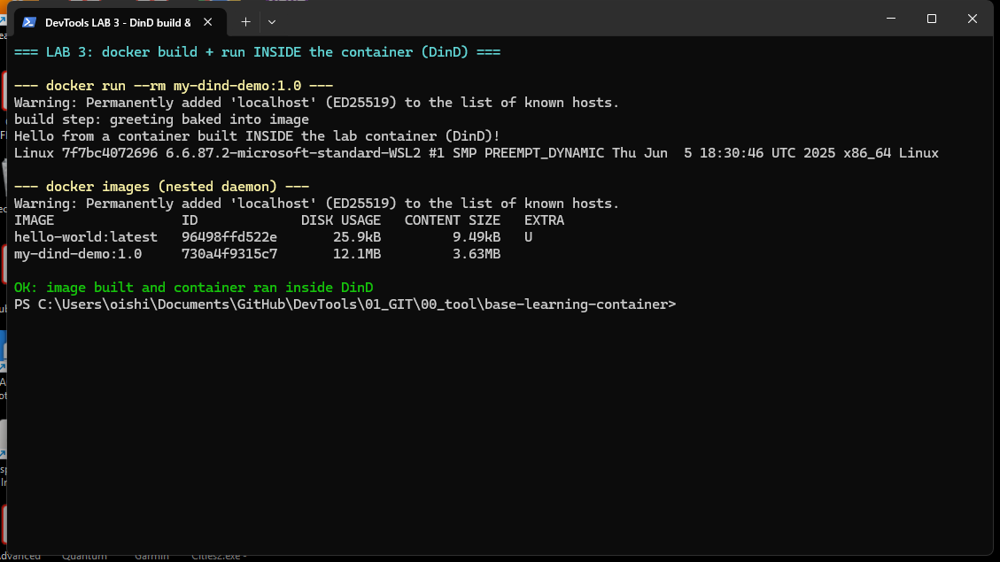

วิชา Software Development Tools and Environments
ฝึก git + Docker-in-Docker + SSH + FastAPI | ทำจริง บันทึกผลจริงทุกขั้นตอน
เอกสารนี้สร้างจากการรันคำสั่งจริงทั้งหมด + แคปหน้าจอจริง (8 ภาพ) — ใช้เป็นแนวทางให้เพื่อนทำตามได้ทันที
ssh student@localhost -p 2222 เข้าไปทำงาน
(อย่าใช้เทอร์มินัลที่ attach ตรง ๆ หรือ docker exec).
ผลลัพธ์ทุกอันในหน้านี้เก็บจากเซสชัน SSH จริง.
บน Windows + Docker Desktop (เปิด WSL2 backend) ให้ build image จาก Dockerfile
แล้ว run container แบบ detached พร้อม --privileged (จำเป็นสำหรับ Docker-in-Docker)
และ map พอร์ต 2222→22 (SSH) กับ 8000→8000 (Web API).
# build image docker build -t devtools-base-lab:24.04 . # run แบบ detached (backtick ` = ขึ้นบรรทัดใหม่ใน PowerShell) docker run -dit --privileged --name devtools-lab ` -p 2222:22 ` -p 8000:8000 ` -v dind-data:/var/lib/docker ` devtools-base-lab:24.04
# build สำเร็จ (layer ถูก cache จากครั้งก่อน) => naming to docker.io/library/devtools-base-lab:24.04 done => writing image sha256:b3f2fd7328575ef2e214a4ee0fc1fad2a9e97e26ba745d49fdd80ec580992575 # run คืน container id af2ac04518cddc5f52c2becafd15c2233ab8eec8eeb4fa7119f9ed8dc8719162 # docker ps devtools-lab | Up | 0.0.0.0:8000->8000/tcp, 0.0.0.0:2222->22/tcp
# pgrep ภายใน container 10 sshd: /usr/sbin/sshd [listener] 0 of 10-100 startups 11 dockerd # sshd ฟังพอร์ต 22 อยู่จริง tcp 0.0.0.0:22 LISTEN 10/sshd # host เข้าถึง sshd ที่พอร์ต 2222 ได้ (เส้นทางเดียวกับที่นักศึกษาใช้) TcpTestSucceeded : True SSH banner: SSH-2.0-OpenSSH_9.6p1 Ubuntu-3ubuntu13.16

devtools-lab สถานะ Running จริง
docker images (image id b3f2fd732857) + docker ps เห็น container Up พร้อม map พอร์ต 2222/8000--privileged → dockerd ใน container จะสตาร์ทไม่ขึ้น (DinD ใช้ไม่ได้)-dit (detached) เพราะเราจะเข้าไปทำงานผ่าน SSH ไม่ใช่ attach ตรง` ต้องเป็นตัวท้ายบรรทัดจริง ๆ (ห้ามมีช่องว่างตามหลัง)เชื่อมต่อจาก PowerShell เข้า container ด้วยผู้ใช้ student รหัสผ่าน student
(host พอร์ต 2222 → container พอร์ต 22) แล้วตรวจว่ามี git และ Docker-in-Docker ใช้งานได้.
ssh student@localhost -p 2222 # ครั้งแรกถาม fingerprint ให้พิมพ์ yes แล้วใส่รหัสผ่าน: student # หลัง login เปลี่ยนรหัสผ่านด้วย: passwd
git --version docker run --rm hello-world # ทดสอบ Docker-in-Docker
LOGIN_OK student # whoami af2ac04518cd # hostname (= container id) git version 2.43.0
docker run --rm hello-worldHello from Docker!
This message shows that your installation appears to be working correctly.
To generate this message, Docker took the following steps:
1. The Docker client contacted the Docker daemon.
2. The Docker daemon pulled the "hello-world" image from the Docker Hub.
(amd64)
3. The Docker daemon created a new container from that image which runs the
executable that produces the output you are currently reading.
4. The Docker daemon streamed that output to the Docker client, which sent it
to your terminal.

LOGIN_OK, whoami=student, hostname=af2ac04518cd, git version 2.43.0
docker run --rm hello-world ใน DinD ออกข้อความ "Hello from Docker!" ครบssh-keygen -R "[localhost]:2222"hello-world ออกผลแปลว่า dockerd ใน container ทำงาน — ถ้า error
Cannot connect to the Docker daemon แปลว่ารัน container โดยลืม --privilegeddocker exec — กติกาบังคับให้ทำผ่าน SSHสร้าง REST API ด้วย Python (FastAPI + uvicorn) ในเซสชัน SSH แล้วเปิดดูจากเบราว์เซอร์บน Windows ที่พอร์ต 8000 รวมถึงหน้า Swagger UI อัตโนมัติ.
cd ~ mkdir webapi && cd webapi python -m venv venv source venv/bin/activate # prompt จะขึ้น (venv) นำหน้า pip install fastapi uvicorn
Ubuntu 24.04 ใช้นโยบาย PEP 668 — ห้าม pip install ลงระบบตรง ๆ ต้องใช้ venv
venv active: /home/student/webapi/venv Python 3.12.3 fastapi 0.138.0 pydantic 2.13.4 pydantic_core 2.46.4 starlette 1.3.1 uvicorn 0.49.0
main.pycat > main.py <<'PY'
from fastapi import FastAPI
app = FastAPI(title="DevTools Web API")
@app.get("/")
def home():
return {"message": "Hello DevTools! Web API ทำงานแล้ว"}
@app.get("/students/{name}")
def greet(name: str):
return {"student": name, "status": "ok"}
PY
uvicorn main:app --host 0.0.0.0 --port 8000
ต้องใช้ --host 0.0.0.0 เพื่อให้เข้าถึงจากนอก container ได้ (อย่าใช้ 127.0.0.1)
INFO: Started server process [766] INFO: Waiting for application startup. INFO: Application startup complete. INFO: Uvicorn running on http://0.0.0.0:8000 (Press CTRL+C to quit)
# เปิดในเบราว์เซอร์ หรือทดสอบด้วย curl http://localhost:8000 http://localhost:8000/students/student01 http://localhost:8000/docs # Swagger UI
# GET /
{"message":"Hello DevTools! Web API ทำงานแล้ว"}
# GET /students/student01
{"student":"student01","status":"ok"}
# GET /docs -> STATUS 200, Content-Type text/html, มี swagger-ui : True
# GET /openapi.json
title: DevTools Web API
paths: /, /students/{name}
Ctrl + C # หยุด uvicorn deactivate # ออกจาก venv
uvicorn stopped


http://localhost:8000 เห็น {"message":"Hello DevTools! Web API ทำงานแล้ว"}
http://localhost:8000/docs แสดง 2 endpoints (GET / และ GET /students/{name})--host 127.0.0.1 → เปิดจาก Windows ไม่ได้ (connection refused) ต้องเป็น 0.0.0.0source venv/bin/activate แล้ว pip install → โดน error
externally-managed-environment (PEP 668)เขียน Dockerfile เล็ก ๆ แล้ว docker build + docker run
ภายใน container ให้สำเร็จ (พิสูจน์ว่า Docker daemon ที่ซ้อนอยู่ทำงานครบวงจร).
mkdir ~/dindlab && cd ~/dindlab cat > Dockerfile <<'DOCKER' FROM alpine:3.20 RUN echo "build step: greeting baked into image" > /hello.txt CMD ["sh", "-c", "cat /hello.txt && echo 'Hello from a container built INSIDE the lab container (DinD)!' && uname -a"] DOCKER
docker build -t my-dind-demo:1.0 . docker run --rm my-dind-demo:1.0 docker images
#2 [internal] load metadata for docker.io/library/alpine:3.20 DONE #4 [1/2] FROM docker.io/library/alpine:3.20 ... DONE #5 [2/2] RUN echo "build step: ..." > /hello.txt DONE 0.2s #6 exporting to image => naming to docker.io/library/my-dind-demo:1.0 done => unpacking to docker.io/library/my-dind-demo:1.0 DONE
build step: greeting baked into image Hello from a container built INSIDE the lab container (DinD)! Linux 7f7bc4072696 6.6.87.2-microsoft-standard-WSL2 #1 SMP PREEMPT_DYNAMIC x86_64 Linux
docker images (daemon ที่ซ้อนอยู่)IMAGE ID DISK USAGE CONTENT SIZE hello-world:latest 96498ffd522e 25.9kB 9.49kB my-dind-demo:1.0 730a4f9315c7 12.1MB 3.63MB

docker run my-dind-demo:1.0 (hostname 7f7bc4072696 = container ใหม่) + docker images ของ daemon ที่ซ้อนอยู่7f7bc4072696) เป็นคนละค่ากับ container หลัก — ยืนยันว่ามันคือ
container ใหม่ ที่ถูกสร้างจาก daemon ซ้อน--privileged)docker run สำเร็จ — container id af2ac04518cd, Up, ports 2222/8000 mapped 📸 01_docker_desktop.png, 02_powershell_run.png03_ssh_login.png, 04_hello_world.pnghttp://localhost:8000/docs (Swagger UI) ได้ — HTTP 200, swagger-ui โหลด, 2 endpoints 📸 05_uvicorn_running.png, 06_browser_root.png, 07_swagger_ui.png08_dind_build_run.pngAppActivate
→ หาขอบหน้าต่างด้วย UI Automation (AutomationElement.BoundingRectangle)
→ แคปเฉพาะกรอบนั้นด้วย Graphics.CopyFromScreen เพื่อให้ได้ภาพ crop พอดีหน้าต่าง
(จอเครื่องนี้เป็น ultrawide 3440×1440 จึงต้อง crop ไม่ใช่แคปทั้งจอ) — เก็บไฟล์ไว้ในโฟลเดอร์ screenshots/ ข้าง ๆ ไฟล์ HTML นี้
03_ssh_login.png (LAB 1) และ 07_swagger_ui.png (LAB 2) ตามที่ใบงานกำหนด
docker stop devtools-lab # หยุด container docker start devtools-lab # เปิดใหม่ (แล้ว ssh เข้าไปใหม่) docker rm -f devtools-lab # ลบ container docker volume rm dind-data # ลบข้อมูล DinD
docker start ข้อมูลใน home ของ student ยังอยู่dind-data = ล้าง image/container ที่อยู่ใน DinD ทั้งหมด (เริ่มใหม่หมด)